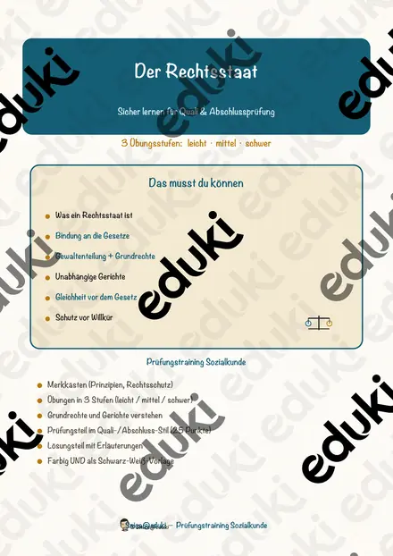
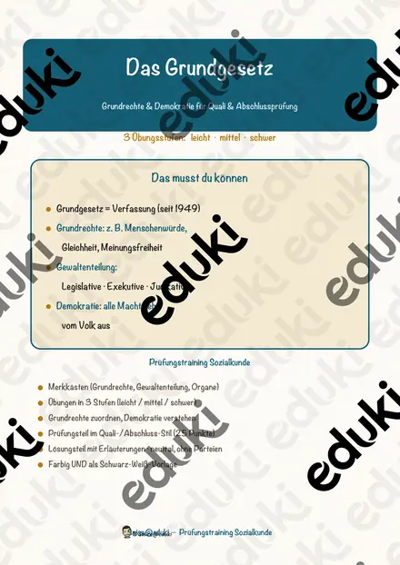

Grundgesetz und Grundrechte: Arbeitsblätter für Klasse 5–10 (Politik/Sozialkunde)
Das Grundgesetz ist Rechtsgrundlage der Bundesrepublik. In der Politik- und Sozialkunde lernen Jugendliche Grundrechte, Rechtsstaat und deren Grenzen kennen.
Zum Themenkern zählen Grundrechte, Menschenwürde und Rechtsstaat. Als Vertiefung bieten sich Verfassungsorgane und Meinungsfreiheit an, am Ende steht oft Gleichheit.
In den Lehrplänen der Länder ist das Thema im Fach Politik/Sozialkunde verankert, meist in der Sekundarstufe I (Klasse 5–10). Die Jugendlichen erklären zentrale Grundrechte und prüfen Fälle des Alltags.
Im Alltag einer Lehrkraft zählt, dass Material sofort einsatzbereit ist: Die Blätter zu Grundgesetz und Grundrechte greifen Menschenwürde, Rechtsstaat und Verfassungsorgane auf, lassen sich ausdrucken und kommen mit Lösungen, damit die Vorbereitung kurz bleibt. Leistungsstarke und schwächere Lesende erhalten über die Lesespurgeschichten Texte in drei Stufen.
6 passende Materialien stehen bereit, etwa Das Haus der Grundrechte, Der Rechtsstaat und Das Grundgesetz und die Grundrechte. Vertreten sind 1 Lesespurgeschichte, 2 Prüfungstrainings und 3 Lückentexte mit Hörverstehen; die Stufen reichen über Klasse 5–9. Eigene Fallbeispiele aus dem Schulalltag, an denen Grundrechte abgewogen werden, schaffen Praxisbezug.
Das gehört zum Thema
Passende Arbeitsblätter und Materialpakete

Das Haus der Grundrechte – Lesespurgeschichte mit Rätselaufgaben (Klasse 9)

Der Rechtsstaat – Prüfungstraining Sozialkunde (Klasse 9)

Das Grundgesetz und die Grundrechte – Prüfungstraining Sozialkunde (Klasse 9)

Verfassung Lückentext mit Wortspeicher Hörverstehen und Suchsel

Rechtsstaat Lückentext mit Wortspeicher Hörverstehen und Suchsel

Grundgesetz Lückentext mit Wortspeicher Hörverstehen und Suchsel
Häufige Fragen
Für welche Klassenstufe passen die Arbeitsblätter zu Grundgesetz und Grundrechte?
Passend sind Klasse 5–9. Von den 6 Titeln wenden sich die meisten an Klasse 9, einige lassen sich differenzierend auch in benachbarten Stufen nutzen.
Welche Inhalte decken die Materialien zu Grundgesetz und Grundrechte ab?
Behandelt werden unter anderem Grundrechte, Menschenwürde, Rechtsstaat und Verfassungsorgane. Welche Aspekte in Ihrer Klasse Vorrang haben, richtet sich nach dem Lehrplan Ihres Bundeslandes.
Wie setze ich Grundgesetz und Grundrechte im Unterricht ein?
Beginnen Sie mit einem Einstieg zu Grundrechte und ergänzen Sie nach Bedarf. Eigene Fallbeispiele aus dem Schulalltag, an denen Grundrechte abgewogen werden, schaffen Praxisbezug.
Mehr Material nach Fach und Klasse
- Alle Materialien Politik/Sozialkunde
- Arbeitsblätter Politik/Sozialkunde Klasse 6
- Arbeitsblätter Politik/Sozialkunde Klasse 7
- Arbeitsblätter Politik/Sozialkunde Klasse 8
- Arbeitsblätter Politik/Sozialkunde Klasse 9
- Arbeitsblätter Politik/Sozialkunde Klasse 10
- Unterrichtsmaterial Klasse 5
- Unterrichtsmaterial Klasse 6
- Unterrichtsmaterial Klasse 7
- Unterrichtsmaterial Klasse 8
- Unterrichtsmaterial Klasse 9
- Unterrichtsmaterial Klasse 10
Verwandte Lehrplanthemen
- Bundespräsident, Kanzler und Regierung (Politik/Sozialkunde, Klasse 5–10)
- Bundestagswahl und Parteien (Politik/Sozialkunde, Klasse 5–10)
- Europäische Union (Politik/Sozialkunde, Klasse 5–10)
- Demokratie und politische Beteiligung (Politik/Sozialkunde, Klasse 3–10)